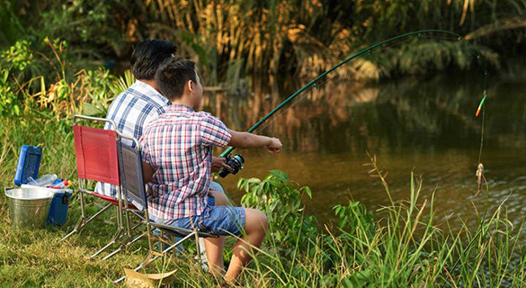
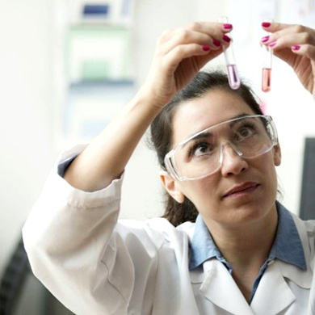

资源依托型
依托项目区域具有先天优势和一定康养价值的自然或者文化资源进行开发
目标客群：银发养老客群、保健养生客群 自然资源：森林植被养生、乡村田园养生、滨海养生、温泉矿物养生 ... 文化资源：宗教文化养生、医药文化养生 ...
森林植被养生类
依托丰富多彩的森林植被景观、沁人心脾的森林空气环境、健康安全的森林食品、内涵浓郁的生态文化等优质的森林资源，将现代医学和传统中医学有机结合，并配备相应的养生休闲、医疗及康体服务设施、丰富森林游憩体验，在森林中开展一系列以改善身心健康、保健、养生、养老为主要目的森林康养旅游度假产品。
- 优势资源：森林资源丰富、生态环境良好的林地、林区等；
- 选址条件：交通可达性强、森林覆盖率应当在60％以上，生态环境优质、当地无重大污染源等；
- 打造要点：富氧野趣的森林生态环境+高品质的康养度假产品+深度生态游憩体验;
- 可开发项目：生态游憩，养生康体，运动探险，特色酒店，养生养老地产……
富氧野趣的森林环境
保持资源的生态性、自然性和完整性
康养与森林游憩的深度体验
探险、游乐、科教、森林特产
浙江莫干山
山地养生型旅游度假目的地，世界裸心神圣养生之地，远离尘嚣、回归自然
【区位规模】
位于浙江省北部德清县境内，沪、宁、杭金三角的中心，距德清县城17公里，杭州60公里，上海190公里，南京280公里。总规划面积58.77平方公里。
【发展定位】清凉世界，避暑胜地、国内户外运动天堂、品质度假首选地。
【发展概况】
2016年获批省级旅游度假区，现登记在册民宿550家，精品洋家乐150家。2012年被纽约时报评为“2012年最值得去的45个地方”,被 CNN列为“15个必须要去的中国特色地方之一”。
【客源结构】主上海市民，2010年接待国内旅游者590万人次，以都市白领，亲子家庭客群为主。
以顶级森林山水基底为抓手，引入高品质养生度假产品，打造成世界级生态文化养生型度假目的地
富氧优质的森林环境+百年人文别墅群+高端养生度假聚落
“清凉世界、避暑胜地”
竹海、清泉、四季山地风光：芦花荡公园、塔山公园、剑池飞 瀑、莫干湖等
“世界建筑博物馆”・名人别墅
皇后饭店―毛泽东；武陵村―蒋介石；白云山馆――周恩来、蒋介石；林海别墅――杜月笙、张啸林
洋家乐・德清生态旅游的典型代表
以中高端客群为主导：三九坞、裸心谷、莫干山法国山居等，提供水疗、高尔夫、裸心味、骑马等休闲
亮点项目・裸心谷：以生态为媒，构建从住宿-美食-休闲娱乐全方位的养生度假体验
以生态为媒介，从住-食-闲-娱构建一体化养生度假功能配套
原生态养生
一切进程以不破坏自然景观为原则，完整的保留原有的林相与植被。
理疗康体
林木深处的养身中心、健身房、瑜珈房、冥想馆
乡村田园养生类
以乡村、田园为生活空间，以农作、农事、农活为生活内容，以农业生产和农村经济发展为生活目标，回归自然、享受生命、修身养性、度假休闲、健康身体、治疗疾病、颐养天年的一种康养度假方式。
田园养生度假开发要注重田园、自然、村庄三者的有机结合，以田园为主，以村庄为次，以自然为补充，以“田园的村庄化和村庄的田园化”，来发挥田园的空间载体作用。
- 优势资源：乡村田园景观资源，田园生产资源；
- 选址条件：经济发达、人口众多的城市周边，交通可达性良好；
- 打造要点：乡村景观风貌营造+康养与传统文化结合+康养与农业生产、农耕体验结合;
- 可开发项目：田园花海观光，草药养生，古法养生，乡村度假，养生养老地产……
康养与传统文化结合
中医药养生、地方民俗养生、传统膳食养生
康养与农业生产、农耕体验结合
绿色农副产品、草药理疗、农事体验…
泰国清迈稻田度假村
田园养生休闲的世界级奢华度假酒店，极致乡野养生度假生活
【区位规模】
坐落于湄霖（Mae Rim）山谷的稻田中，距离清迈仅几分钟车程；60亩（约4万平方米）
【核心吸引】创意的田园体验：酒店建于稻田之中，度假的同时满足都市人对田园生活的体验向往；奢华的度假体验：设施华丽高端，私密空间与开放空间合理搭配；
【功能定位】
独特的世界级奢华度假酒店，奉献给游客的一件高雅文化艺术遗产；以“极致乡野生活，自然奢华的山水田园天堂”主题
【酒店设施】共98间客房：包含64栋稻田楼阁、12栋泳池别墅、17栋住宅和5栋住宅别墅；客房、餐厅、健身场地、水疗设施、商务服务设施、烹饪学校等场地都散布在稻田之中。
极致发挥田园资源的养生度假体验，延展六大养生产品体系
依托稻田资源，突出康养+农业生产+农耕体验结合，延伸6大养生产品体系
生态养生
行走于稻田
赤足于田埂，看水牛经过，观湖边亭榭，品田园四季……
康疗养生
康疗于稻田
泰式SPA、田间瑜伽、稻田泳池；
耕作养生
耕作于稻田
水稻课程：换上工衣，学习体验泰国的水稻耕种；
美食养生
饮膳于稻田
稻田餐厅：风味泰国北方菜、下午茶；漂流竹饮：在竹筏湖间享受美食；
解压养生
修身于稻田
烹饪课程：听从大厨的讲解示范做地道的泰餐，酒店会颁发 “泰餐烹饪课毕业证书”；健康俱乐部：各种解压健身活动；
滨海养生类
自古以来海上休闲度假旅游就格外重视其康体疗养的功能，近年来海洋疗法更是愈演愈热。临床研究证明海洋疗法对于许多疾病都有独特的疗效。海水浴的推广以及海水对某些疾病治疗功能的发现更孕育了滨海养生的诞生。
滨海养生主要是以海水、沙滩、海洋食物等海洋资源为依托，建设形成的海水和沙滩理疗、海上运动、海底科普旅游、海边度假、海洋美食等产业。
- 优势资源：海水沙滩资源、气候资源、海产资源；
- 选址条件：有特色海洋资源且海水质优良、岸线优美，气候适宜，全年至少有6个月适宜开展海滩及海上活动；
- 打造要点：滨海特色主题风光+滨海养生资源利用与开发+康养与滨海深度体验的结合；
- 可开发项目：滨海疗养康复，海岸、海上、海底运动探险，海产美食养生，滨海休闲度假，养生养老地产…
滨海特色主题风光
优质海水、海岸美景，日光沙滩，海底世界
多元化利用海洋养生资源
利用气候、阳光、海水、沙滩、海洋食材开发养生、理疗、康复度假产品
康养与滨海深度体验的结合
海上运动、科普探险、海边度假、海洋美食
墨西哥坎昆度假村
玛雅文明古城+优质3S养生海岛，打造国际滨海养生之都
【区位规模】位于加勒比海北部，墨西哥尤卡坦半岛东北端。
【核心吸引】加勒比的阳光、渐变海洋、优质白玉沙滩
【功能定位】集气候养生、水疗养生、运动养生等于一体的滨海养生度假地。
【发展概况】1972年，建设旅游区。1975年，正式开始接待游客。1981年，召开“坎昆会议”，发展国际会议。
【客源市场】年接待游客超过1000万人次，旅游总收入达50亿美元，游客人均消费1000美元以上。
海洋养生资源多元化开发利用，打造深度滨海特色康养体验项目
气候养生
海产食疗养生
水疗养生
海岸森林养生
海钓静心养生
滨海居住养生
运动养生

高尔夫
23公里度假酒店中心区提供舒适齐全的休闲度假配套服务
五星级酒店群
度假别墅
商业中心
主题餐厅
酒吧和舞厅
温泉矿物养生类
温泉本身具有保健和疗养功能，是传统康养旅游中最重要的资源。现代温泉康养已经从传统的温泉汤浴拓展到温泉度假、温泉养生。温泉养生产业在坚持温泉医学和温泉疗养的基础上，开始出现休闲化和综合化的趋势，以针对健康和亚健康人群为主，以放松解压、快乐度假为主要目的养生旅游逐步成为时尚，并与传统温泉医疗产品有机结合，形成以保养和健康促进为主的养生温泉。
- 优势资源：温泉旅游资源或养生矿物质资源；
- 选址条件：自然环境优美或经济发达、人口众多的城市周边，交通可达性良好；
- 打造要点：高品质的温泉矿物养生度假环境+多元化、特色化的温泉矿物养生体验+品质化养生度假配套；
- 产品构成：温泉矿物养生，游乐体验，康复疗养，度假酒店，养生养老地产……
高品质的温泉矿物养生度假环境
优美的自然环境、丰富的人文风情、特色的历史传统文化、沐浴文化
多元化特色化温泉矿物养生体验
不同资源环境、文化主题、特色泡池等差异化、创新化开发多种类型的温泉养生产品
完善的品质化养生度假配套
养生康体、商务会议、运动游乐、休闲度假
德国巴登巴登
以享誉全球的优质矿物温泉为核心特色，世界级的养生休闲度假胜地
【区位规模】德国黑森林西北部边缘奥斯河谷巴登巴登小镇。
【核心吸引】享誉全球的优质矿物温泉
【功能定位】欧洲文化会议中心、世界温泉度假胜地
【发展概况】18世纪末，皇家浴场，以温泉知名的疗养圣地。1838年，法国人爱德华・贝尔纳成立伊费茨赛马俱乐部，巴登巴登被称作“欧洲的夏都”。
【客源市场】主要以温泉养生、休闲度假、赛事会议客群为主。
顶级温泉资源打响知名度，高档配套丰富度假体验，赛事活动引爆客流
宗教文化养生类
利用道教、佛教等宗教传统中饱含的丰富的养生、绿色医疗、自然保健、自我身心保养等资源，深度挖掘项目地独有的宗教、民俗、历史文化，结合市场需求及现代生活方式，打造利于养心的精神层面的旅游产品。
满足人们观光游览、审美欲望、精神需求和猎奇心理，在获得文化体验的同时，能够修身养性、回归本心、陶冶情操。
- 优势资源：道教、佛教等宗教文化养生资源；
- 选址条件：宗教文化特色鲜明，历史文化底蕴深厚，交通便利；
- 打造要点：宗教圣地景观打造+宗教文化氛围营造+宗教养生深度体验;
- 可开发项目：观光朝圣，宗教文化体验，禅修、禅养度假，养生养老地产……
宗教文化氛围营造
听梵音、读经典、抄经书、禅修讲解，禅心初悟
宗教养生深度体验
宗教养生膳食、禅境解压、禅养度假
山东庆云宫养生度假区
融汇传统道家文化和养生文化为一体的休闲养生福地
【区位规模】位于山东省德州市庆云县，总面积1.5公顷。
【核心吸引】碧霞元君成仙得道之地，“尊道贵德”为文化统领结合“性命双修”的功能应用
【功能定位】道家经典，养生水城道家文化体验地，北方休闲养生城。
【发展概况】2009年，原泰山行宫正式施工扩建。2013年，获得国家旅游发展基金扶持。2015年，正式开园，被山东省旅游局列为“全省重大文化旅游项目” 。
【养生理念】宗教圣地朝圣+道教养生+酒庄养生等养生方式与原生态的田园景观、生态种植、绿色食品等相结合。
以宗教圣地景观庆云宫为核心区域，道教养生与温泉养生、田园养生结合，打造特色道家养生地
一心
庆云宫道文化核心（约113亩）作为道文化的展示区域，集观光、体验和中医养生为一体。
四区
温泉欢乐区（约94亩）、民俗风情区（约148亩）、清修疗养区（约140亩）、田园养心区（约405亩）
武夷山国家旅游度假区
以理学文化、道家文化、茶文化、民俗文化为养生基底，开发具有地域特色的文化养生产品
问道
通过论道弘道、内丹实修、道医养生、国学传播等多项研习、体修活动。
悟道
通过道学、数术、道医等与科学的内在关系来体道、证道、了道，诠释道家“天人合一”的尊道观
布道
通过开展道德学堂、体道养生、闭关修炼等来种德、立德、布德，实现道家“知行合一”的道德观。
民俗风情区
民俗工坊、庙会风情街、花鸟鱼市、福禄寿喜四园。
温泉欢乐区
温泉水游乐、温泉水疗、温泉SPA、温泉餐厅和温泉酒店。
清修疗养区
企业会所、枣酒庄酒堡、高尔夫球场等高端户外运动场所。

田园养心区
以养生、养老、生态种植、养殖为主题的生态宜居体验区。
医药文化养生
依托中医药资源以及养生保健服务设施，以中医药文化独具特色的理论体系和内容为基础，将现代科技和古代中医养生理论相结合，在环境适宜的旅游度假区实现中医养生，增强体质，修身养性的度假生活方式。
- 优势资源：传统特色的医药康疗技术及医药康养度假氛围；
- 选址条件：城市周边、交通便捷、基地具有中医药文化底蕴或中医药种植基础；
- 打造要点：医药养生文化氛围营造+医药养生多元化深度体验+自身医药养生品牌树立。
- 可开发项目：医药种植园，医药康疗养生，医药养生文化博览、医药文化科教体验，养生养老地产……
医药文化养生氛围营造
强化度假区文化景观环境和养生保健服务
传统医养多元化深度体验
传统医养度假、会展讲座、养生文化博览
形成自身医药养生品牌
极具竞争力的医药养生理论、技艺
泰国Tao Garden 养生度假村
运用道家气功等养生理念，开发完整的医疗康复养生产品体系，构筑享誉国际的疗养胜地
【项目概况】泰国清迈市郊北麓，距离清迈市大约三十分钟车程，占地约200亩。
【发展概况】1997年，由在道家和武术方面有着超过45年经验的道教气功大师谢明德（Mantak Chia ）建立。作为学习了解道家文化习俗场所，后逐渐发展成为完整全面的休憩疗养圣地。
【核心特色】运用中国道教的思想和理念，通过练习气功、冥想、调节自身气息等手法使人们的身心得到解放。
【功能结构】以道家文化为核心，集苦修道行、健康理疗、休养度假、疾病预防、课程培训为一体的完整全面的休憩疗养胜地。无论是个人还是团体都可以去那里感受一回种类繁多的整体性的康复疗法。
形成集专业化健康检查+传统护理疗程+多样化医疗技术为一体的、完善的疗养服务
专家会诊
常规性体检
验血、量血压、尿液或唾液的PH值、心电图。
一般性体检
验血、量血压、尿液或唾液的PH值、心电图、脑电图、脑机能检测。
全身性体检
验血、量血压、尿液或唾液的PH值、心电图、脑电图、脑机能检测、体能分析、五种微元素含量检测。
医疗设备
提供人体葡萄糖、胆固醇、甘油三酸脂的含量检测，吸天然氧气等服务。拥有血液循环震动器、微波除蛔虫器、电疗器等医疗设备。
印度草药身体护理
Abhyanga：运用印度传统的草药油，促进血液循环。
Shirodhara：源于印度的一种传统医学，达到长寿和返老还童的效果。
Abhyanga & Pindasveda：用印度的草药药油轻轻洗擦按摩，排除体内毒素、促进血液循环、减缓压力、放松肌肉。
Abhyanga Herbal Scrub：促进血液循环、排除淋巴系统中的毒素、减轻肌肉的疲劳、新生肌肤、提高免疫力。
综合性诊所
Tao Garden为客人们提供最好的医疗技术、最有效的治疗方法和最详细的诊疗科目，使人们的身体得到康复。可选择的治疗项目有：矿泉疗养、减肥疗法、排毒疗法、印度中草药疗法、泰国传统道法疗法、传统中医疗法、病痛理疗疗法。
以道法内调为核心，配套其他调养护理产品，提供全方位内调服务
核心道法内气调养
气功内力疗法
（50分钟）
气功内力疗法就是针对过度的工作、压力、事故、手术、营养不良等身心问题，使人们康复的一种按摩疗法。
道家瑜伽治疗法
（50-110分钟）
根据2000年前由佛教徒从印度传到泰国的，它能刺激人们的能量流，使人们身心得到平衡、头脑清醒、身体强壮。
道家草药外敷疗法
（50-110分钟）
所用的草药由传统的草药药油，混合香油、椰子、柠檬油等制成，针对不同的病情热敷或者冷敷。
道家太极治疗法
（50-110分钟）
在古瑜伽术的基础上形成的，可治疗慢性肩周炎、偏头痛、软组织混乱综合症、关节炎及其各种并发症等。
其他内气调养
五元香薰按摩 （90分钟）
小腹按摩疗法（50分钟）
肌腱疗法（50-110分钟）
精油按摩疗法（50-110分钟）
足部针灸反射疗法（50分钟）
减食按摩疗法（110分钟）
热矿温泉按摩疗法（50分钟）
物理治疗法（30分钟）
香蕉叶治疗法（30分钟）
泰国草药蒸汽浴
美容护理产品
肌肤护理：去除死皮，使肌肤光滑柔嫩，修复晒伤的肌肤。
排毒：传统泰式排毒疗法、去毒按摩、内功疗法、脸部脉冲疗法、传统中医针灸疗法、清洁胆囊、针灸或拔火罐、洗肾、泻盐浴等料杨服务。
延缓衰老：提供血液供氧、有氧中药蒸气浴、水疗、远红外桑拿浴等疗养服务。
美容美发：提供整套的脸部按摩服务和全套美发服务。
美甲修脚：配合温泉spa提供舒适完善的美甲和修脚服务。
理疗：病痛人工按摩、水疗、水中运动、瑜伽疗法
以道家康体保健为核心开展养生研习课程，以休闲娱乐项目作为养心配套
气功（50分钟）
增强内力，调节气息，提高身心的和谐，改善身体境况 。
太极气功（50分钟）
改善身心健康，使身体更加强壮、柔软，具有持久力。
中国瑜伽（50分钟）
对于平衡背部肌肉和脊椎关节疗效显著。
外炼-道家康体保健
研习
道家康体课程
包括帮助提升人们内在气质和外在形象的课程、瑜伽课程、气功课程、太极课程、中国功夫等。
娱乐
心态调整项目通过一系列的休闲娱乐项目来达到保持良好心态的目的。提供乒乓球、羽毛球、游泳、桑拿等一系列的休闲娱乐活动。
形成集专业化健康检查+传统护理疗程+多样化医疗技术为一体的、完善的疗养服务
养生环境
Tao Garden掩映在丛林之中，优美和谐的环境使得Tao Garden成为远离城市和其它烦恼的理想之地。
Tao Garden所提供的食物在营养搭配上讲求阴阳和五行元素的协调，例如道家的糖是从甘蔗、蜂蜜、水果中提纯出来的；盐是从喜马拉雅山脉的结晶盐中提纯出来的。提供的有机健康食品包括新鲜水果和蔬菜果汁，自制的酸乳酪、豆浆、牛奶糊、药茶，自制的色拉、香料等。
酒店配套
客房共分三个等级，满足不同需求的游客们。
一星房和二星房都是由原来的老房子改造的，房间中的家具多数都是二手的，但是房子周围的环境是非常好的；
三星房位于镇公所，有单独的浴室和阳台。
度假设施
Tao Garden拥有一个运动场馆，里面有乒乓室、羽毛球馆、网球馆、篮球馆、体操馆。
设有慢跑小道、太极游泳池、桑拿室、药浴室。
有两个练习太极的场所，一个外室外的太极蓬，用于学习练习太极拳等；
一个为室内的冥想厅，用于修身养性，研究远古的太极养生之道。
丛林环境+理疗服务+道家锻炼+养生研习+愉悦身心+健康饮食构筑完整的康养胜地
道养
综合性诊所、热矿温泉按摩、香薰按摩、精油按摩、水疗、理疗、桑拿
内调
针灸疗法
气功内力疗法
道家太极治疗法
道家瑜伽治疗法
道家草药外敷疗法
研习
道家习俗
返老还童长寿的秘诀
养生方法方式
道家康体课程
饮食
道家糖、道家盐、新鲜水果、鲜榨蔬果汁、自制的酸乳酪、自制豆浆、自制牛奶糊、自制药茶、自制色拉、自制香料、
资源依托型开发方式总结
开发模式遴选条件
以自然生态资源为基础
度假区所在地区具有不可复制的或自身具有康养价值的先天优势资源，例如温泉、冷泉、矿物质、海湾、江河湖泊、森林山地、乡村田园、气候等生态资源，
以区域特色文化为基础
度假区所在地区具有悠久的历史以及民族、宗教、中医药、茶道、饮食、武术及长寿文化等丰富文化内涵，随着时间的沉淀与世代的传承所保留着自身的特色。
核心目标客群
银发养老客群、保健养生客群
产品结构
1个生态养生度假环境
养生度假基础：生态文化养生环境打造
N类核心养生资源
引客核心：生态养生类/温泉矿物类/宗教文化类等
N个留客产品
配套留客产品：完善养生产品体系；完善资源养生型度假产品体系；深度生态文化体验
X个产业衍生
产业衍生产品：养生养老地产、绿色食品、医疗保健、运动健身等
产业驱动型
通过植入相关特色产业，以医疗服务、康复护理、保健运动等大健康产业为核心业态驱动开发
目标客群：银发养老客群、康复医疗客群、保健养生客群、美容康体客群
运动康体类
在环境优美、风景较好的地域，依托山地、峡谷、水体等地形地貌及资源，借助一定的运动设备、设施，以强身健体、放松身心为主要目的，以运动、休闲、娱乐为主要方式，发展山地运动、水上运动、户外露营等户外康体养生产品，强调体验性与参与性，通过游客主动参与活动以促进身心健康。同时推动体育、旅游、度假、健身等业态的深度融合发展。
- 优势资源：山地、峡谷、水体等地形地貌及相关资源；运动体育产业基础
- 选址条件：交通可达性良好、有开发特色户外运动的场地优势
- 打造要点：生态优质的运动康体环境打造+多元化运动项目开发+自然生态的度假体验
- 可开发项目：民族运动，传统运动，高端运动，户外极限运动，健身、野奢度假、特色营地……
生态优质的运动康体环境打造
依托地形地貌、自然资源打造生态、优美的景观环境
多元化运动项目开发
融入传统、时尚、文化、高端、大众、极限等多元化运动康体项目
自然生态的度假体验
自然、野奢休闲度假，户外康体养生等项目
新西兰皇后镇瓦卡蒂普湖
聚焦运动，一个湖湾成就世界运动旅游度假天堂
【区位规模】新西兰东南部，瓦卡蒂普湖北岸，面积293平方公里。
【核心吸引】世界冒险之都，运动空间覆盖海陆空三界。
【功能定位】集度假游乐、户外运动于一体的综合性运动旅游度假目的地。
【发展概况】1862年，因在沙特瓦河边淘到金子而兴起淘金热，小镇人口一度达到1万。1947年，开设第一家滑雪场后，每年都有盛大的冰雪节，以各类雪上运动闻名。至今，成为国际运动天堂，常年运动运营220种，运动空间覆盖海陆空三界。
【客源结构】以探险、户外运动等体育活动市场为主，年接待游客近200万人次。
依托天赋峡湾资源以运动产业为核心驱动乡村旅游以及度假产业发展
运动型景点
分布区域皇后镇中心区、高山区、湖泊区
项目构成高尔夫、冰上运动场、滑雪、蹦极、急速弹跳、喷射快艇、私人游艇、漂流、徒步、自行车、跳伞、四驱车越野等
度假酒店群
分布区域集中分布在皇后镇中心（97家）和瓦卡蒂普湖北侧滨水区域；
项目构成索菲特酒店、布兰凯特湾 精品度假屋、贝斯酒店、尖塔酒店、埃查特私密酒店、湖畔公寓等
乡村休闲景点
瓦尔特高原牧场乘古老的TSS厄恩斯劳号蒸汽船穿越瓦卡蒂普湖，参加牧场游乐活动（剪羊毛、牧羊犬赶羊、挤羊奶等）；乘热气球观赏基督城全貌。
做专运动健身项目打响运动度假品牌，衍生旅游观光、休闲养生度假产品推动旅游消费
| 类别 |
主要运动活动 |
| 运动休闲 |
四驱车越野 |
欣赏《指环王》拍摄地的奇妙风光 |
| 喷射快艇 |
是商业喷射快艇的发源地，在码头乘坐“卡瓦罗号”，穿越休特弗河峡谷 |
| 漂流 |
卡瓦罗河（适合初学者）、休特弗河的船长峡谷（更刺激）四季皆可行 |
| 骑山地自行车 |
众多的车道选择可以满足各种技术水平的需求（科罗奈特峰的滑雪道在冬季后成为自行车观光降滑道）、古老的船长峡谷背包车道、鲍伯峰降滑体验等 |
| 滑雪等雪上运动 |
科罗奈特峰拥有南部湖群最古老、最著名的雪场 |
| 登山/骑马/徒步 |
提供多条路径的登山和徒步游道 |
| 蹦极/高空弹跳 |
高空弹跳的鼻祖，拥有各种高度（35、72、105公尺等）、样式、白天黑夜的选择，而卡瓦劳大桥是世界蹦极跳的发源地 |
| 热气球 |
40米高空远眺全镇美景，安全的救护体制 |
| 跳伞/特技飞行 |
在专业教练的指导下感受极限运动的快感 |
| 高端项目 |
直升机 |
租架直升飞机，飞往偏远幽静的高山地区，享用丰盛的香槟野餐 |
| 高尔夫 |
在世界级的高尔夫球场挥杆击球 |
| 私人游艇 |
租一艘私人游艇，享受垂钓的乐趣 |
医疗康复类
以医护疗养，康复休养为主题的旅游。依托适宜的气候资源、医药资源、现代中西医疗技术资源等，将优质的医疗康复咨询服务与旅游度假结合，以中西医疗、心理咨询、康复护理、医药医疗科技、医疗设备、复健器材、居家护理设备等内容为核心。
一般分为以保健养生为主的疗养旅游，和以疾病疗愈为主的治愈旅游。在达到治疗目的的同时进行康复、疗养、观光、度假。
- 优势资源：中西医疗产业资源
- 选址条件：医疗技术发达区域，有景区景点依托，气候适宜，交通便捷
- 打造要点：宜人的气候和优美的康疗环境+先进优质的康复疗养技术与服务+完善的康复养生养老度假配套
- 可开发项目：美容美体，高端体检，医疗救治，康复疗养，医疗培训，医疗会议会展，度假生活配套，康复养老地产……
宜人的气候和优美的康疗环境
适合康复的宜人气候和讲求身心和谐的优美环境
先进优质的康复疗养技术与服务
高端前沿的疾病康复治愈技术及设备；优质的体检、康复、疗养服务
完善的康复养生养老度假配套
与旅游结合完善度假生活配套，康复养老地产
瑞士蒙特勒Montreux
世界羊胎素美容圣地，高端奢华抗衰老医疗旅游度假目的地
【区位规模】瑞士沃州日内瓦湖东岸蒙特勒占地41.37km2。
【核心吸引】拥有11家私立医院，配套世界先进的诊疗技术，以羊胎素发源地为契机开展医疗旅游项目，逐步发展完善医疗旅游配套设施，服务高端人群。
【发展概况】世界独特的疗法：活细胞注射疗法为核心吸引。医疗与度假结合：注射一次羊胚胎素要7天时间，延展多元度假产品。高端的旅游消费：吸引了世界各地的名流、模特、明星。治疗费一周至少1万欧元，名牌和高档商店生意红火。
【客源结构】主要以国内、俄罗斯、近东、中国及印度等高端客群为主，每年约3万外国客人到访，人均消费百万瑞郎，面向中国项目收费最低的体检内容为2万元人民币。
完备医疗养生、旅游度假全套服务链，满足高度服务市场顾客需求，吸引全球客源
养生系统
静港医疗中心
抗衰老体验
羊胚胎素活性疗法
“青春之旅” 保健医疗旅游产品
完善的医疗设施系统，先进的诊疗技术，享受五星级个性化医疗服务
独特化抗老疗程
为期一周，量身定做各类抗衰老疗法，包括矿物水疗、运动健身、按摩推拿、特定药物治疗等，针对每个客人的身体特质和衰老状态，制定个性化的羊胚胎素抗衰老治疗方案。
个性化整形美容方案
提供特色整形，包括医学整形、更年期调理、牙齿矫正及光子美肤、减肥训练课程、催眠治疗、各类SPA等特色疗法。

多元化产品研发
各类维他命、皮肤诊疗仪器、美容保养品、烹饪出版物和相关医疗监测设备。
定制化医疗旅游服务
瑞士静港医疗中心利用蒙特勒旅游资源整合旅游产业面向全球营销“青春之旅”的保健医疗旅游产品，吸引全球高端客群。
专业化医疗团队
拥有瑞士政府认证的羊胚胎素抗衰老执业医师及其医疗服务团队.
医疗与度假结合延展休闲度假、运动养生、商务会议、娱乐观光、文化教育、居住等多元度假产品
文化活动
体育运动：攀岩/钓鱼/露营/骑马/游泳
参观游览：手工作坊/会议展览/歌剧演出
餐饮娱乐：咖啡/酒/主题餐厅/露天烧烤
购物休闲：土特产/旅游纪念品
休闲运动配套设施
室外：网球场/高尔夫球场/游泳场/露天浴场
滑草场/马场/温泉浴场/游艇码头
室内：棋牌室/健身中心
风情建筑
酒店/公寓/民居/别墅/庄园/宫殿
城堡/钟楼/教堂/商业街/购物中心
艺术中心/泛博物馆/广场/桥梁/酒吧/咖啡厅
产业驱动型开发方式总结
开发模式遴选条件
区域无明显特色资源，通过植入相关特色产业功能，强化健康养生养老主题，以医疗服务、康复护理和养老养生为核心业态，植入大健康产业、养生养老产业、体育运动产业等进行慢病疗养、美容保健、运动健身、休闲娱乐、养生养老度假等多动能开发。
开发商自身具有优势的核心养生类产品，例如高新医疗技术等可驱动度假区开发。
核心目标客群
银发养老客群、康复医疗客群、保健养生客群、美容康体客群
产品结构
1个养生度假环境
养生度假基础：适宜康养度假环境打造
N类功能型养生产品
引客核心：医疗服务、美容保健、运动康体等产品
N个留客产品
配套留客产品：完善养生产品体系；完善功能型养生度假产品体系；深度养生服务体验
X个产业衍生
产业衍生产品：养生养老地产、康疗产业、科研培训产业、运动健身产业等
综合开发型
养生资源与健康产业共同驱动，多业态多功能综合开发
目标客群：银发养老客群、康复医疗客群、保健养生客群、美容康体客群
瑞士达沃斯小镇
阿尔卑斯空气最洁净地区，阿尔卑斯山系最高的疗养旅游胜地
【区位规模】瑞士东南部格里松斯地区，海拔1529米，占地面积 283KM2。
【核心吸引】拥有阿尔卑斯地区最洁净的空气资源，建成欧洲最大的高山滑雪场，众多国际体育盛会的举办地。
【功能定位】集度假游乐、户外运动于一体的综合性运动旅游度假目的地。
【发展概况】19世纪，因空气洁净成为疗养圣地，医疗产业入驻。1877年，建成欧洲最大的天然冰场。1900年，完善休闲、体育运动设施建设，成为全年旅游胜地。
【客源结构】每年接待来自世界各地约230万游客，以高山疗养、运动度假、国际会议客群为主。
以优势养生资源兴起，依靠运动产业占领市场，提高知名度，完善综合产品开发吸引四季游客。
- 19世纪
市场引导期优势资源驱动发展
-
疗养地，健康度假村
依靠空气资源小有名气，海拔高、四面环山，空气干爽清新，对预防肺结核、保健有极大帮助，达沃斯成为健康度假村。
- 1877年
市场引导期特色产业导入发展
-
欧洲最大天然冰场建成
欧洲最大天然冰场落成，成为世界级选手训练地。冰雪体育馆承办各种国际赛事。
- 1900年
产品竞争期旅游产品丰富完善
-
休闲旅游迅速发展
为满足客户的休闲以及体育运动健身需要，先后建设了雪橇道，索道，高尔夫球场等设施，并完善了夏季旅游产品，成为全年旅游胜地。
- 1969年
产品竞争期新领域提高知名度
-
达沃斯会议中心建成
建成达沃斯国际会议中心，承办各种世界知名会议，提高小镇知名度。
以阿尔卑斯雪山优势资源为养生本底，综合开发山地运动、康复医疗等功能型康养产品拉动消费
特色交通串联，会议活动打响知名度，引爆客流，结合休闲度假等多业态综合发展
人文观光
基尔西纳美术馆
展列了曾在达沃斯居住过的德国画家基尔西纳的作品1,200余件
木偶和玩具博物馆
展示了18-19世纪的木偶以及锡镀板玩具的个人收藏
乡土博物馆
对阿尔卑斯地区传统生活进行一瞥的地方，存放有民俗资料
冬季体育运动博物馆
陈列了从古至今的冬季体育用品，及与其相关的资料
综合开发型开发要点总结
开发模式遴选条件
以度假区及周边现有特色产业资源为平台，结合区域内现有的资源，植入外来成熟产业，如引进国内外医疗美容资源、大健康产业、养生养老产业、体育运动产业等，综合开发集生态文化养生与产业功能养生为一体的度假区。
核心目标客群
银发养老客群、康复医疗客群、保健养生客群、美容康体客群
产品结构
1个健康养生度假环境
养生度假基础：良好的度假环境打造
N类综合型康养产品
引客核心：具有核心竞争力、独具特色的康养产品
N个留客产品
配套留客产品：完善养生产品体系；完善产业康养型度假产品体系；深度产业服务体验
X个产业衍生
产业衍生产品：高端度假地产、康疗美容产业、运动体育产业、教育培训产业